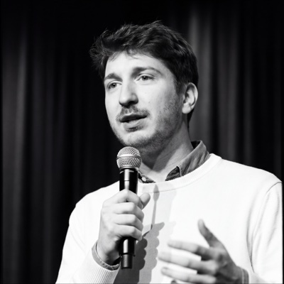

Greg Mróz
Hey, I'm Greg. I'm an operator who builds companies. Two years ago I co-founded SALT, a DTC electrolyte brand in Poland — today I run most of it with agents.
Currently building a2c — Claude Code for DTC teams: one place where a brand's team hands work to agents, the agents do it inside the tools the brand already uses, and everything lands in one shared memory.

Roles
Journey
- 17Made my first $100k from a Facebook page curating AliExpress finds, grown organically to 300,000+ followers — zero ad spend, run alongside school.
- 2018Quantitative Methods in Economics at SGH Warsaw School of Economics.
- 2020Polish development bank BGK — promoted from strategy intern to strategic client analyst.
- 2021Founder's associate at StockAmbit, a crowdfunding platform.
- 2022Project support at BCG, business analyst at Gleevery, then an exchange at EDHEC Business School in France.
- 2023Product at Jumia in Porto. Master's in Entrepreneurship & Innovation at Lund University, where I co-founded Vomerce — reverse vending machines for textiles. $100k in grants; an industrial machinery manufacturer took over our IP and hired the team.
- 2024Co-founded SALT and built it on the ground in Poland. PLN 9M (~$2.4M) in revenue and 40,000 customers in year one. Since then I've replaced our marketing, email and Shopify agencies with Claude Code wired into our stack.
- 2026Started a2c.
Contact
- LinkedIngrzegorzmróz